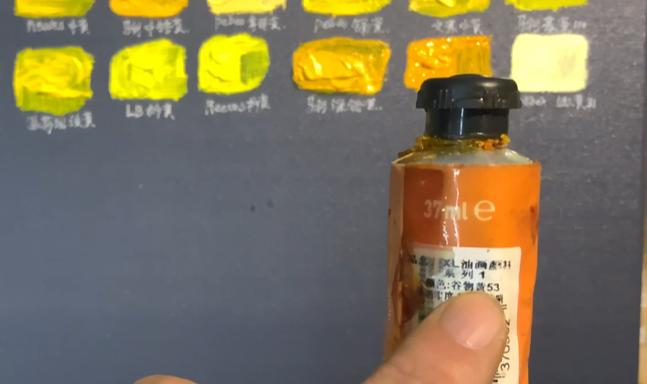
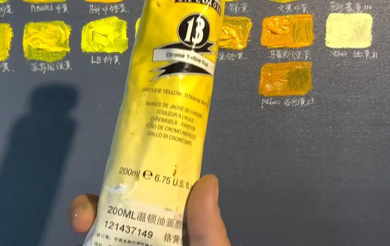
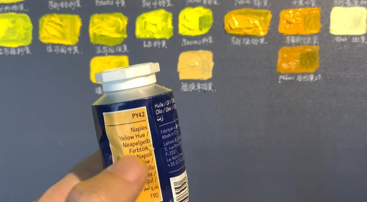
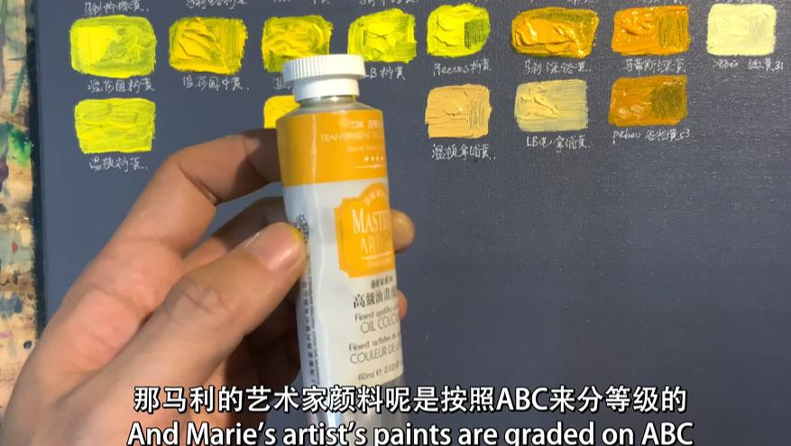
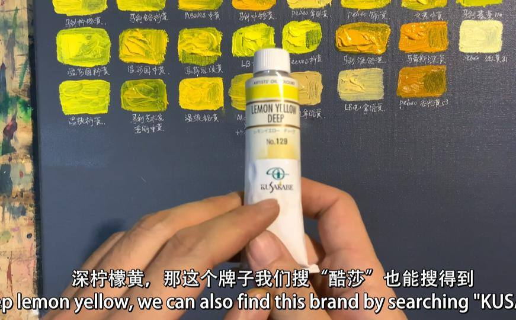
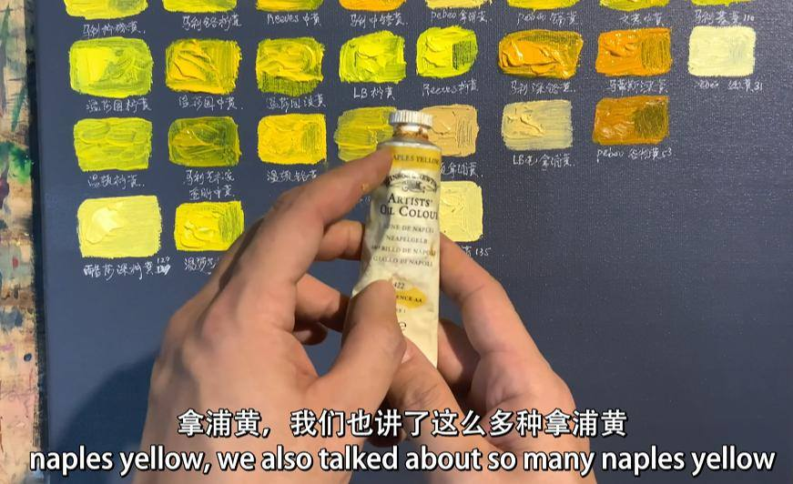
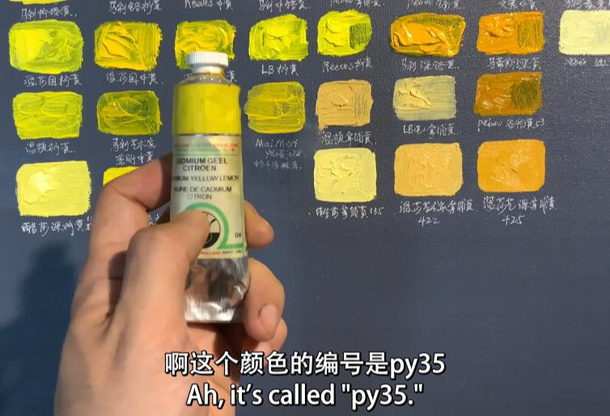
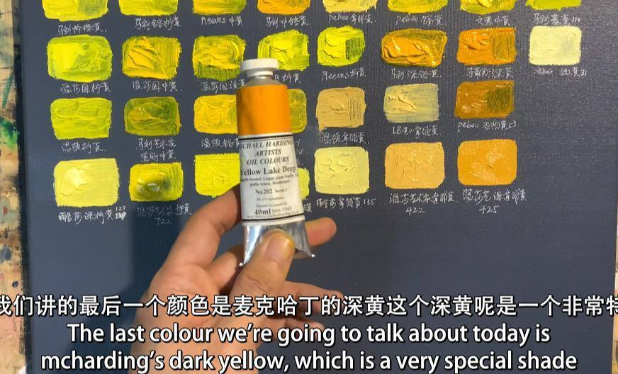

公开课
【常用黄色】铬黄\镍钛黄\镉黄——黄色系（二）
在上期介绍了柠檬黄和那不勒斯黄等黄色颜料后，这期我们继续深入分析更多黄色系颜料。本篇重点讨论多个品牌的颜料特性及其在油画中的应用。通过贝碧欧、温莎牛顿、老荷兰等品牌的对比，我们可以更好地了解不同黄色颜料的特点，如覆盖力、透明度、干燥速度等，帮助艺术家在创作时做出明智选择。
视频链接： http://xhslink.com/a/BCuEpRKi6sSW
1. 贝碧欧谷物黄：特别的色相名称
贝碧欧的谷物黄是一个较为特殊的颜色，色相名称独特但未必非常出色。事实上，它更接近深那不勒斯黄，是当前讨论的黄色中明度较高的一个。然而，这种名称有时会带来困扰，因为它未能准确反映颜色的实际特性。

2. 温莎牛顿学生级铬黄：性价比之选
温莎牛顿学生级铬黄是一种适中的黄色，色温介于柠檬黄和中黄之间。尽管其耐光性较差，容易受热变色，但其价格较为实惠，适合入门级和学生使用。它的颜色均匀，颜料与油的混合比例良好，覆盖力和饱和度都在合理范围内。

3. 夏伯纳的那不勒斯黄：覆盖力的挑战
夏伯纳品牌的那不勒斯（拿坡里）黄虽有明亮的色相，但覆盖力较弱，颜料的稠度较稀，添加剂过多导致密实度和覆盖力不足。相比其他品牌，它在表现大面积色块时稍显薄弱，且耐光性也较为一般。

4. 玛丽艺术家级透明中黄：适合罩染
玛丽的透明中黄是一款质地黏稠的透明色，适合用作罩染。其颜色的明度较低，纯度一般，但在色温方面表现适中，适合用在细腻的颜色过渡中。虽然没有提供详细的成分，但其透明度表现优异，特别适合精细的色彩处理。

5. 日下部深柠檬黄：色相与命名的差异
日下部的深柠檬黄颜色明亮，尽管命名为“深”，但实际色相偏亮。通过色相编号（如PY53、PY173和PW6），我们可以了解它是由两种黄色和一种白色混合而成，这样的组合让颜色具备较强的覆盖力和明度，是一个比较适合大面积铺色的颜料。

6. 温莎牛顿艺术家级那不勒斯黄：强大的覆盖力
温莎牛顿的那不勒斯黄以其强大的覆盖力和密实度而著称，非常适合表现大面积色块和皮肤灰色层次。它的主要成分是铅黄，具有很高的密实度和强大的遮盖能力，特别适合复杂的层次表现。

7. 老荷兰铬锌黄：颜料中的优质选择
老荷兰品牌的铬锌黄（PY35）拥有出色的覆盖力和耐光性，尽管价格相对较高，但其研磨细腻、饱和度高，是高质量作品中的优选。尤其在需要耐久性和稳定性的油画创作中，这款颜料能够为作品提供稳定的表现。

8. 麦克哈丁深黄：慢干的有机颜料
麦克哈丁的深黄是一种有机化学颜料，色相偏橙，着色力强且耐光性好。然而，这款颜料的干燥速度非常缓慢，通常需要5周才能干燥。它适合表现温暖的光线和大面积色块，是一个在色彩表现上非常丰富的选择。

艺术家手册
在本期视频中，我们还提到了一本 艺术家手册，这本手册详细介绍了各种颜料的色相编号、成分和使用特性。通过查询颜料的编号，艺术家可以了解它们的具体特性，如耐光性、透明度等，从而做出更加明智的颜料选择。这本手册对调色和颜料的应用有很大的帮助。
总结
通过对这些黄色系颜料的深入分析，不同颜料在密实度、覆盖力、透明度等方面各具优势。在实际创作中，选择合适的颜料不仅要考虑其色相，还要结合其他颜色的兼容性、耐光性以及干燥时间。希望这篇博客能够为大家提供更好的指导，帮助您在创作中更加得心应手。
本期视频中的色料编号总结
在本期视频中，我们提到了多个色料编号，这些编号对应了不同的黄色颜料，它们在色相、覆盖力和调色特性上各具特色。以下是本期视频中提到的色料编号及其对应的颜料：
- PY35 – 铬黄
- 主要成分是铅铬酸盐，颜色明亮、饱满，具有极强的覆盖力。适合大面积铺色，但含有铅，需小心使用。
- PY53 – 钛镍黄
- 钛镍黄是一种无机颜料，以其耐光性强、颜色明亮干净著称。其覆盖力较强，但透明度相对较弱，适合大面积铺色。
- PY173 – 有机柠檬黄
- 这是一种有机颜料，色相明亮，透明度较高。常用于需要高透明度的画面，适合做颜色过渡和透明层。
- PW6 – 钛白
- 钛白是最常用的白色颜料，具有非常强的覆盖力，耐光性和化学稳定性极佳。常用于调和其他颜色，增亮并增加覆盖力。
- PY128是一种偶氮缩合黄（Azo Condensation Yellow），也称为 Cromophtal Yellow 8G。它是一种有机颜料，具有透明的绿色黄色色调，并具有很高的染色强度。它的主要特点是透明度较高，适合用于需要明亮色彩的混色。虽然它有不错的光牢度，但由于其发现较为近期，仍然有部分艺术家对其耐久性持观望态度